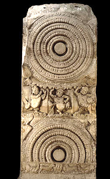

The Buddha's First Sermon
In 528 B.C., the Buddha preached his First Sermon at the Deer Park in a town in north-eastern India called Sarnath. In this First Sermon, the Buddha set in motion the 'dharmachakra' or Wheel of the Law. The Wheel of the Law outlined the teachings of the Buddha about how people should live. The Buddha devoted the rest of his life to teaching others. His teachings live on in the form of the religion we call Buddhism today. |